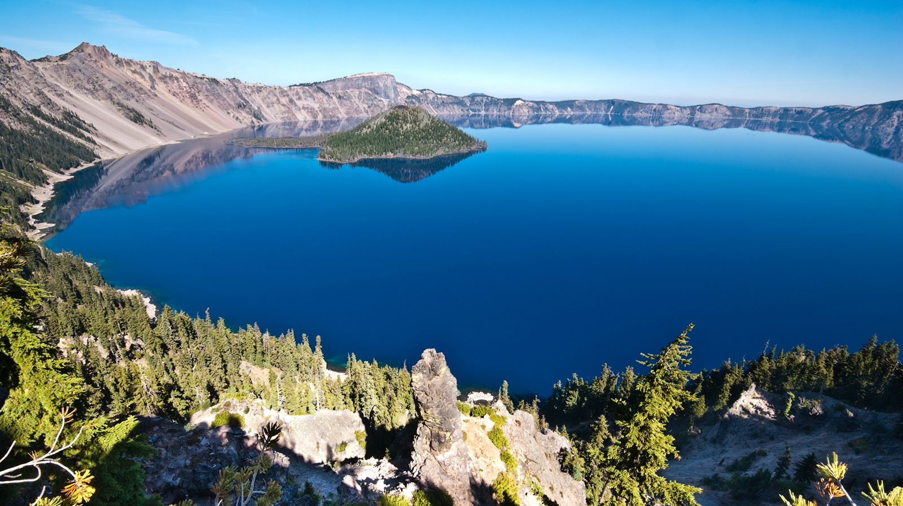
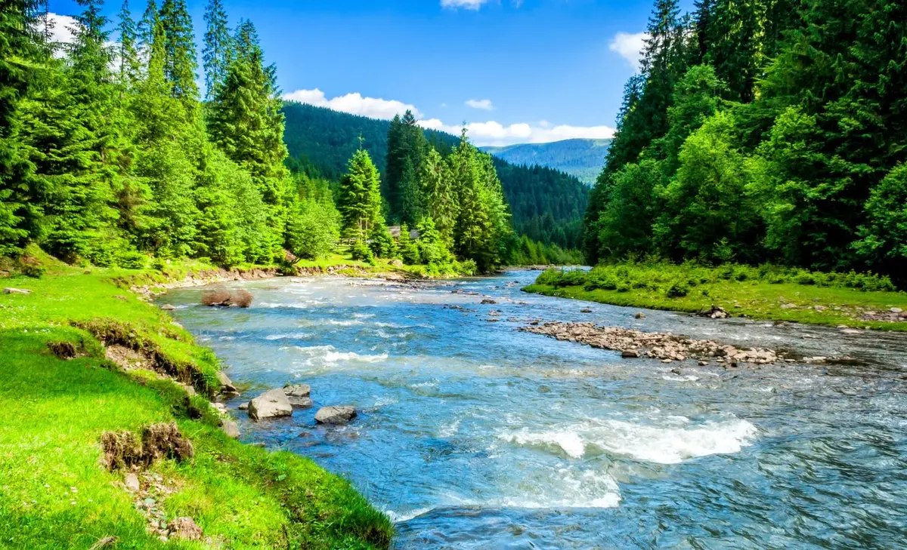

| Types of water | Information | Pictures |
| Ocean |
The ocean is the body of salt water that covers approximately 70.8% of Earth.[8] The ocean is conventionally divided into large bodies of water, which are also referred to as oceans (the Pacific, Atlantic, Indian, Antarctic/Southern, and Arctic Ocean)[9][10],[11] and are themselves mostly divided into seas, gulfs and subsequent bodies of water. The ocean contains 97% of Earth's water[8] and is the primary component of Earth's hydrosphere, acting as a huge reservoir of heat for Earth's energy budget, as well as for its carbon cycle and water cycle, forming the basis for climate and weather patterns worldwide. The ocean is essential to life on Earth, harbouring most of Earth's animals and protist life,[12] originating photosynthesis and therefore Earth's atmospheric oxygen, still supplying half of it. |

|
| Lake |
A lake is often a naturally occurring, relatively large and fixed body of water on or near the Earth's surface. It is localized in a basin or interconnected basins surrounded by dry land.[1] Lakes lie completely on land and are separate from the ocean, although they may be connected with the ocean by rivers. Lakes, as with other bodies of water, are part of the water cycle, the processes by which water moves around the Earth. Most lakes are fresh water and account for almost all the world's surface freshwater, but some are salt lakes with salinities even higher than that of seawater. Lakes vary significantly in surface area and volume of water. |

|
| River |
A river is a natural stream of fresh water that flows on land or inside caves towards another body of water at a lower elevation, such as an ocean, lake, or another river. A river may run dry before reaching the end of its course if it runs out of water, or only flow during certain seasons. Rivers are regulated by the water cycle, the processes by which water moves around the Earth. Water first enters rivers through precipitation, whether from rainfall, the runoff of water down a slope, the melting of glaciers or snow, or seepage from aquifers beneath the surface of the Earth. |

|
| Pool |
A swimming pool, swimming bath, wading pool, paddling pool, or simply pool, is a structure designed to hold water to enable swimming and associated activities. Pools can be built into the ground (in-ground pools) or built above ground (as a freestanding construction or as part of a building or other larger structure), and may be found as a feature aboard ships. In-ground pools are most commonly constructed from materials such as concrete, natural stone, metal, plastic, composite or fiberglass, and may follow a standardized size, the largest of which is the Olympic-size swimming pool, or be of a custom shape. |

|